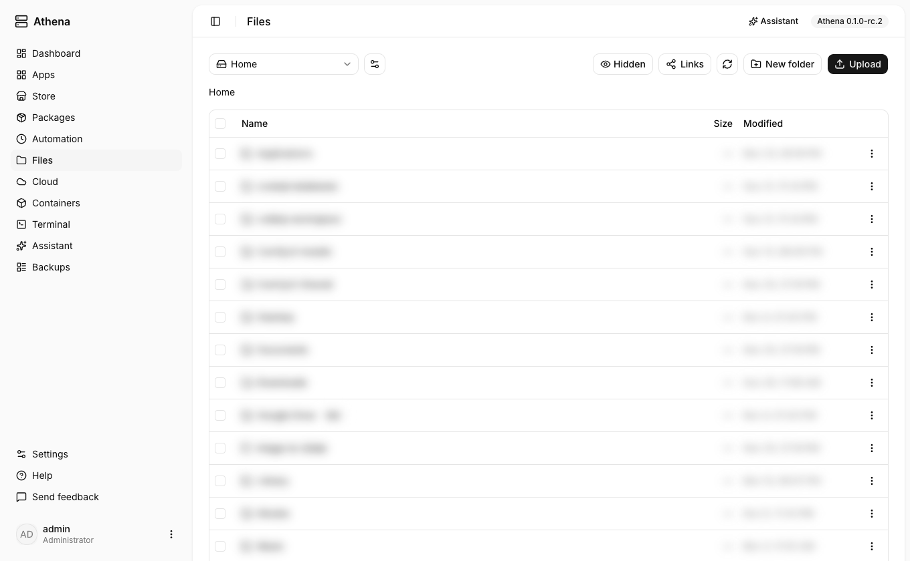

Files and sharing
File manager

Files browses the server's folders from your browser. It only shows locations that an admin has added, never the whole disk. By default Athena adds your home folder and the apps' data folder.
- Upload sends files in pieces, so large files work. New folder creates a folder.
- Select entries to download (folders arrive as a zip), rename, copy, move, or delete. Deleting goes to the trash where your OS supports it.
- Copy and move work across locations and run as a job. When a name already exists you choose to keep both, skip, or replace.
- Hidden shows or hides dotfiles.
- The location picker at the top left switches location. Its settings button adds, edits or removes locations (admins only). Removing a location never deletes its files.
- Text files up to 2 MB open in an editor.
Share links
Select a file or folder and choose share to make a link anyone can open without an account. Links lists the ones you made so you can copy or revoke them. Anyone with the link can read it, so treat it like a password.
Network shares
- WebDAV: turn it on in Settings → System (it's off by default). The server then serves your locations at
/dav/, with its own password: anyone who has it can read and change every location. Windows, macOS, Linux file managers and many phone apps can connect to it. - SMB: Files → SMB manages Samba shares for machines on your network, where the host supports it.
Cloud folders
Remotes you add under Cloud storage appear in the same file manager.